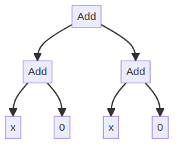
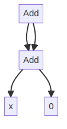
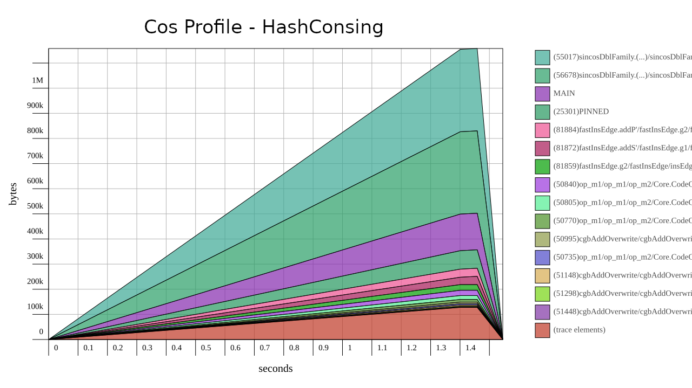
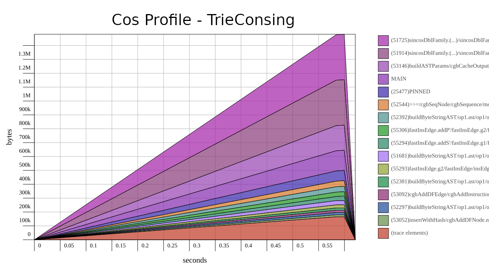
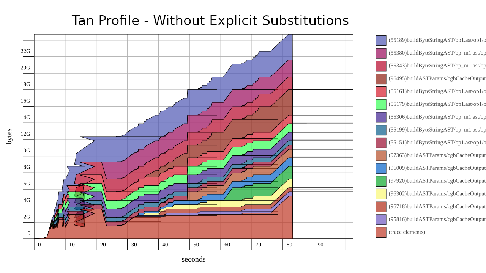
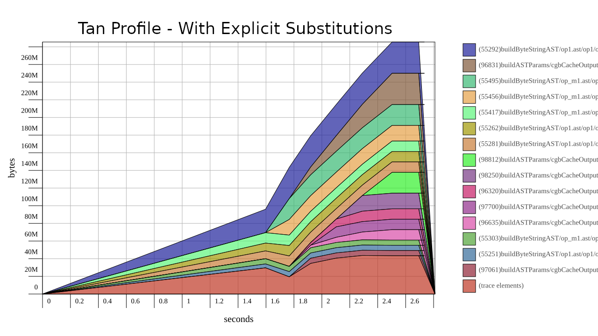

data Exp = Add Exp Exp | Variable String | Constant Int
expr = let exp0 = Add (Variable "x") (Constant 0) in Add exp0 exp0
eval (Add e0 e1) varMap = eval e0 + eval e1 eval (Variable lbl) varMap = lookup lbl varMap eval (Constant c) varMap = c
pretty (Add e0 e1) = "("++pretty e0++") + ("++pretty e1++")" pretty (Variable lbl) = lbl pretty (Constant c) = show c
class Exp repr where variable :: String -> repr Int constant :: String -> repr Int add :: repr Int -> repr Int -> repr Int
data AST a = Op2 String (AST a) (AST a) | Variable String | Constant a instance Exp AST where add = Op2 "Add" variable = Variable constant = Constant
expr = let exp0 = add (variable "x") (constant 0) in add expr0 expr0


perform code generation, for example> codegen [] expr :: AST Float CodeGen (["exp0 = x + 0" ,"exp1 = exp0 + exp0"])
codegen codeList (Op2 lbl e0 e1) = ...
type NodeId = Int data Node a = NConst a | NVar String | NAdd NodeId NodeId newtype DAG a = Map NodeId (Node a) instance Exp DAG where variable x = -- how do we generate a unique NodeID? ...
newtype Graph a = Graph { unGraph :: State (DAG,Int) NodeId } instance Exp Graph where add e1 e2 = Graph (do h1 <- unGraph e1 h2 <- unGraph e2 insertNode $ NAdd h1 h2) ... insertNode n = do (DAG m,cnt) <- get put (DAG (insert cnt n m),cnt+1)
instance Exp Graph where add e1 e2 = Graph (do h1 <- unGraph e1 h2 <- unGraph e2 hashcons $ NAdd h1 h2) ... hashcons :: Node -> State DAG NodeID hashcons e = do (DAG m,cnt) <- get case lookup_key e m of Nothing -> let (k,m') = insert e m in put (DAG m',cnt+1) >> return k Just k -> return k
addChains = let x0 = variable "x" x1 = add x0 x0 x2 = add x1 x1 ... in xn
class ExpLet repr where let_ :: repr a -> (repr a -> repr b) -> repr b instance ExpLet Graph where let_ e f = Graph (do x <- unGraph e unGraph $ f (Graph (return x)))
addChains x = let_ x (\x0 -> let_ (add x0 x0) (\x1 -> let_ (add x1 x1) (\x2 -> ... )))
class Exp repr where variable :: String -> repr Int constant :: String -> repr Int add :: repr Int -> repr Int -> repr Int novel :: (repr Int,repr Int) -> (repr Int,repr Int)
instance Exp Graph where ... novel e1 e2 = let g1 = Graph (do h1 <- unGraph e1 h2 <- unGraph e2 hashcons $ Novel1 h1 h2) g2 = Graph (do h1 <- unGraph e1 h2 <- unGraph e2 hashcons $ Novel2 h1 h2) in (g1,g2)
data DAG = DAG { unTrie :: Trie (Node,NodeID), maxID :: NodeID } data Graph a = Graph { unGraph :: State DAG NodeID , stringAST :: ByteString }
triecons :: ByteString -> Node -> State DAG NodeID triecons sAST node = do DAG trie maxID <- get case Trie.lookup sAST trie of Nothing -> let maxID' = maxID+1 trie' = Trie.insert sAST (node,maxID') trie in do put $ DAG trie' maxID' return maxID' Just (_,nodeID) -> return nodeID
instance Exp Graph where add e1 e2 = let sAST = buildStringAST "nadd" [e1,e2] sT = do ns <- seqArgs [e1,e2] case ns of [n1,n2] -> triecons sAST $ NAdd n1 n2 in Graph sT sAST
seqArgs :: [Graph a] -> State DAG [NodeID] seqArgs inps = let seqArg (Graph sT sAST) = do DAG trie _ <- get case Trie.lookup sAST trie of Nothing -> sT Just (_,nodeID) -> return nodeID in sequence $ map seqArg inps
class Substitute repr where subT :: ByteString -> repr a -> repr a instance Substitute Graph where subT s' (Graph g s _) = Graph g s' (Just s) exampleSubT x y = let z = subT "z" (add x y) in add z z
data DAG = DAG { dagTrie :: Trie (Node,NodeID) , dagSubMap :: Map ByteString ByteString , dagMaxID :: Int } data Graph a = Graph { unGraph :: State DAG NodeID , unStringAST :: ByteString , unSubT :: Maybe ByteString }
| HashCons time | 0.0 secs | 0.0 secs | 0.01 secs | 0.03 secs |
| HashCons alloc | 0.62 MB | 0.74 MB | 28.67 MB | 155.99 MB |
| TrieCons time | 0.0 secs | 0.0 secs | 0.03 secs | 0.16 secs |
| TrieCons alloc | 1.77 MB | 2.33 MB | 129.14 MB | 723.43 MB |
class CoreISA repr where -- | Load from memory into a GPR ldMR :: repr MR -> Int -> (repr GPR, repr MR) -- | Store a GPR into memory stdMR :: repr MR -> Int -> repr GPR -> repr MR -- | Bitwise NAND of two 64-bit general-purpose registers (NNGRK) nandG :: repr GPR -> repr GPR -> repr GPR -- | Bitwise NOR of two 64-bit general-purpose registers (NOGRK) norG :: repr GPR -> repr GPR -> repr GPR -- | Bitwise NXOR of two 64-bit general-purpose registers (NXGRK) eqvG :: repr GPR -> repr GPR -> repr GPR -- | Addition of two 64-bit general-purpose registers (AGRK) addG :: repr GPR -> repr GPR -> repr GPR ...
add2 :: CoreISA repr => (repr GPR, repr GPR) -> (repr GPR, repr GPR) add2 (a, b) = let a' = addG a b b' = addG a' b in (a', b')



